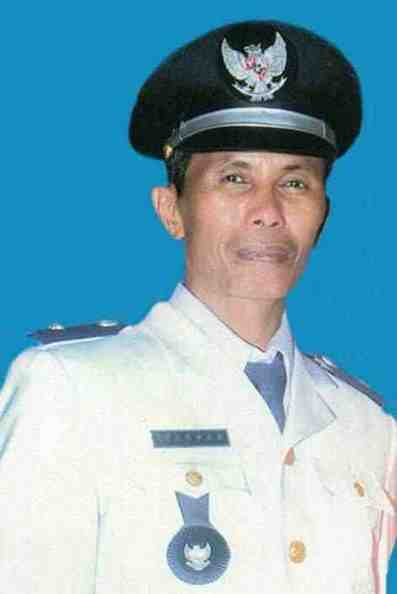
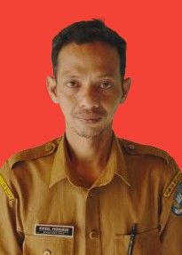
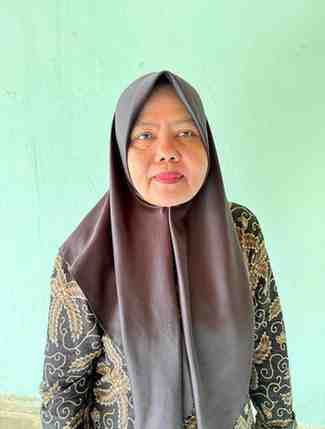
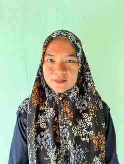
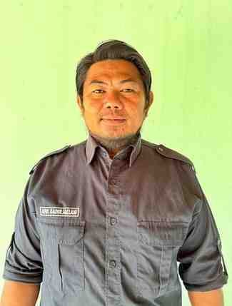

DATA DESA WISATA ANDALAN
73032032008
2019
1200 Ha
Maju
- ADWI 2022 - 300 besar
- ADWI 2023 - 75 besar
SEJARAH
ANDI ANISI PADULUNGI terpilih sebagai Kepala Desa Ara sebagai hasil pemilihan langsung dari warga Desa Ara.
MUHAEMIN A. KARIM, BA menjadi Kepala Desa Ara menggantikan istrinya ANDI ANISI PADULUNGI karena Andi Anisi Padulungi mengundurkan diri.
DAENG PASAU berhasil menjadi Kepala Desa Ara menggantikan MUHAEMIN A. KARIM, BA berdasarkan hasil Pemilihan langsung dari warga Desa.
H. MUSTARI kembali terpilih sebagai Kepala Desa Ara menggantikan Kakak kandungnya DAENG PASAU sebagai hasil pilihan warga Desa.
Desa Ara membangun sarana Jalan Desa terutama yang menuju Pantai Mandala Ria yang hingga saat ini jalan tersebut sudah dapat dilalui kendaraan 4 (empat) roda dimana Mandala Ria adalah merupakan obyek wisata pantai di Kabupaten Bulukumba.
H. MUSTARI meninggal dunia dan untuk penjabat sementara ditunjuklah ABDUL FATTAH AT (Kaur Pemerintahan) guna menjalankan tugas Pemerintaha sehari – hari sambil menunggu pejabat yang definitif.
Desa Ara dimekarkan sehingga lahirlah Desa Lembanna dengan Pejabat Kepala Desa Pertama ialah ARDI BASO DG MANAHANG, dimana Desa Lembanna ini terdiri atas 3 (tiga) Dusun yakni Dusun Pompantu, Dusun Lembanna dan Dusun Bakung-Bakung.
- Meningkatkan kemampuan Sumber Daya Manusia dan inovasi sumber daya alam yang dimiliki.
- Meningkatkan berbagai inovasi dan kreativitas menuju digitalisasi wisata.
- Menjaga kelestarian lingkungan alam dan budaya guna berpartisipasi dalam pengembangan wisata berkelas dunia.
- Menjalin kerjasama dengan berbagai stakeholder pariwisata
- Konsisten melakukan promosi potensi Desa Wisata Andalan menuju digitalisasi desa wisata.
.jpeg)
-  Kepala Desa: Aspar
-  Sekretaris: Nikmal Purnawan
-  Kaur Umum: Anis Rosmiati
- Kaur Keuangan: Nurul Hilmi, S.AK
-  Kaur Kesejahteraan Andi Gerhana
-  Kaur Pemerintahan: ABD. Kadir Jaelani